APL 2025 - AOG fails again
APL 2025 : The AOG region's journey and current standings
Arena of Valor Premier League (APL) 2025 is the international summer tournament of Arena of Valor, held in Thailand with the participation of 16 teams. Among them, 12 teams received direct invitations based on their rankings in their respective domestic leagues, while the remaining 4 earned their spots through the Wildcard round, which was reserved for teams that finished 5th and 6th in their national competitions.
Teams from Indonesia were eliminated early due to the intense competition in the Wildcard stage. As a result, there are no significantly weaker teams in this APL tournament - the playing field is extremely competitive.
From the AOG region, four teams secured direct invites : Saigon Phantom (SGP), FPT x Flash (FPT), BOX Gaming (BOX), and One Star Esport (1S). Meanwhile, Super Nova (SPN) made a strong showing in the Wildcard round and joined the rest of the AOG representatives in advancing to the main stage.
I don't have an image listing the participating teams, so here's a quick breakdown of the teams from other regions competing in APL 2025. From the RPL region: Bacon Time (BAC), EArena (EA), Talon Esport (TLN), Buriram United Esport (BRU), and Full Sense (FS) will represent Thailand. From the GCS region (Taiwan): Banmei Gaming (BMG), Flash Wolf (FW), ANK Gaming (ANK), Deep Cross Gaming (DCG), Hongkong Attitude (HKA), and Cathay One Team (ONE) have qualified for the main event.
Competitions
Swiss stage
Starting from the 2024 season, APL adopted the Swiss Stage format for the qualifiers - one of the most intense and unforgiving tournament systems. In this format, teams are randomly matched in the 0-0 pool (0 wins, 0 losses). After each round, teams are grouped into pools based on their match records, such as 1-0, 0-1, 2-0, etc. Teams in the same pool will continue to face each other in subsequent rounds. A team will be eliminated from the tournament after 3 losses and be qualified after 3 wins. Only those who secure enough wins before reaching 3 losses will advance.
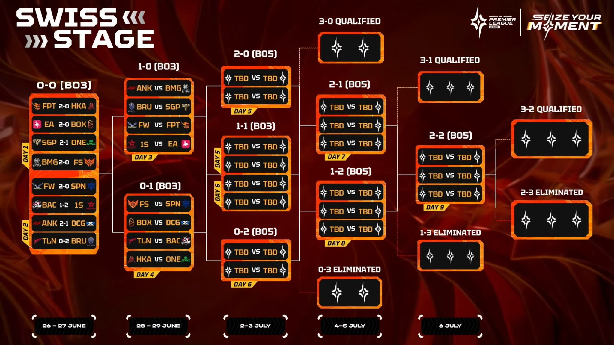
On the first day of competition, FPT showcased their dominance by crushing HKA with a clean 2-0 victory, while SGP had a tougher battle, edging out ONE with a 2-1 scoreline. The remaining three AOG representatives - BOX, SPN, and 1S - all suffered defeats and dropped to the 0-1 bracket.
Intra-regional clashes broke out within both RPL and GCS, and naturally, no region emerged completely unscathed after the first round.
In the second round, all five representatives from AOG suffered defeats.
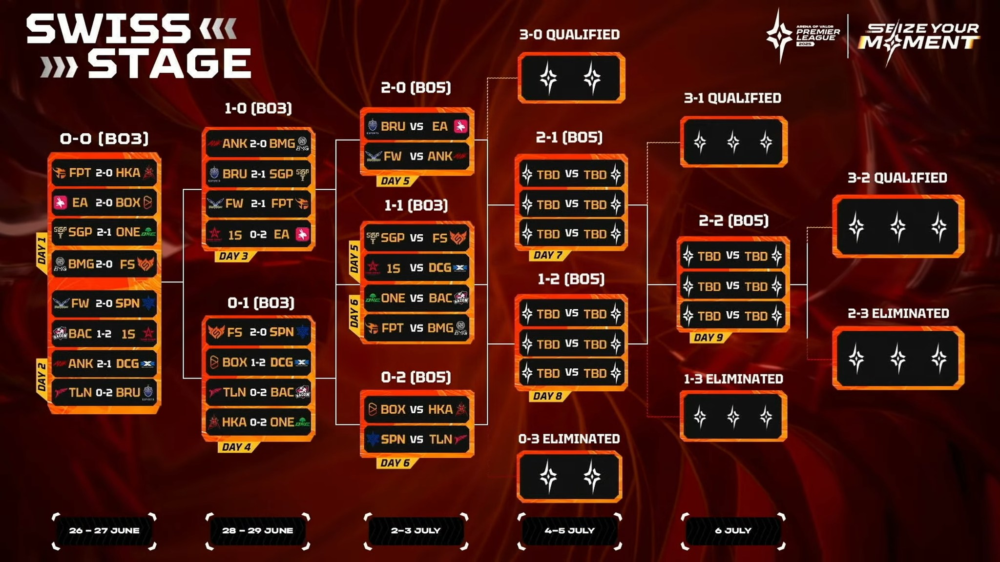
In contrast to the quick defeats suffered by the other AOG representatives, FPT, despite losing 1-2 to FW, played an incredibly close and intense series across all three games. With such a strong performance against the reigning GCS champion, AOG fans have gained renewed hope in FPT's potential this season.
By the final stage of the Swiss round, 1S, BOX, and SPN had all been eliminated from the tournament (unfortunately, I don't have all the bracket images available here for you to follow the results). The two AOG teams that advanced - SGP and FPT - made it through in completely different ways.
After their loss to FW, FPT bounced back in dominant fashion, crushing GCS's second seed BMG with a clean 2-0 sweep, and then defeating RPL champion EA 3-1. With these impressive victories, FPT became the first AOG team to advance past the Swiss Stage.
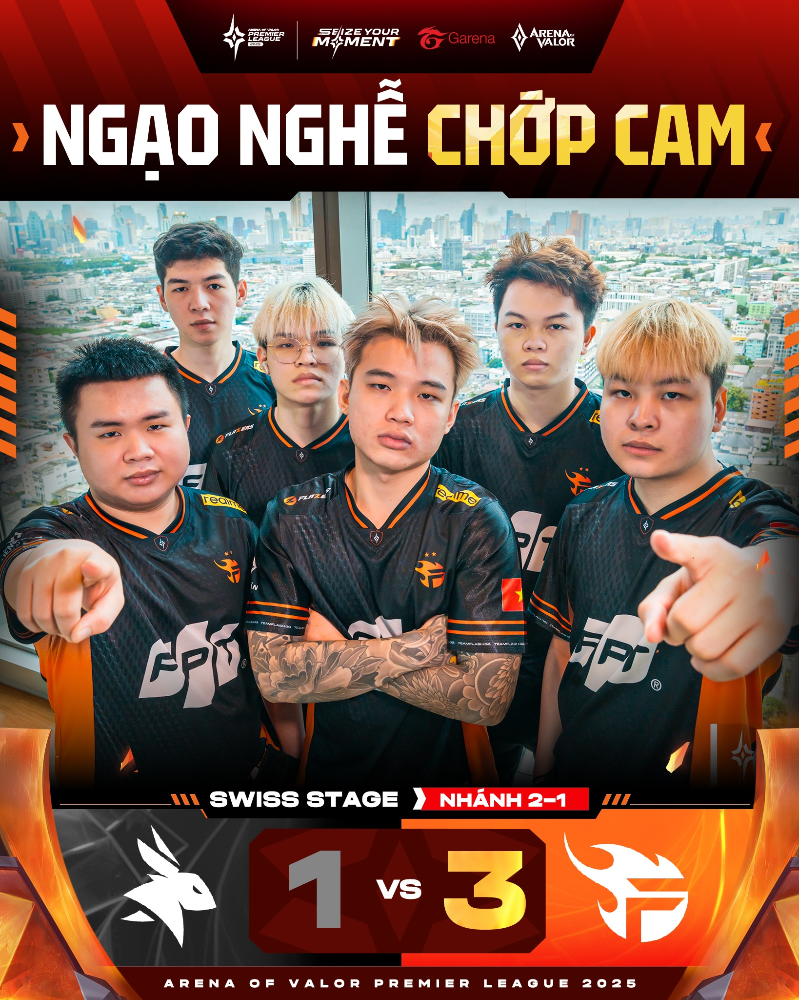
Meanwhile, SGP had to endure a much tougher journey to reach the quarterfinals. They faced off against BMG and secured a convincing 3-1 victory to silence doubts about their form, before sweeping their fellow AOG representative 1S with a dominant 3-0 win.
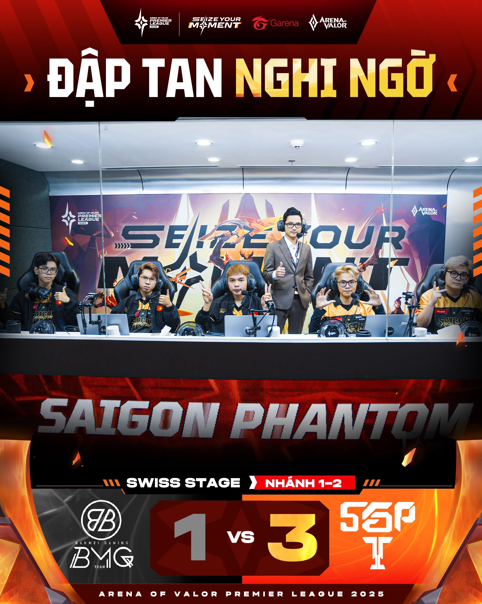
Quarter final
In the quarterfinals, FPT faced off against ANK - a GCS representative who rose from the Wildcard stage but has been showing absolutely dominant form. FPT played on equal footing with ANK, but unfortunately, their top laner HuyHoang made a series of critical mistakes that led to the team's defeat.
After the heartbreaking loss to ANK, FPT dropped to the lower bracket of the quarterfinals and faced EA once again. It seemed like everything was going according to plan when they dominated EA in the first two games. However, fatigue and a lack of composure from the players led to a reverse sweep, with FPT losing 2-3. Their APL journey came to an end in 8th place, earning $11,000 in prize money.
As for SGP, they faced FS in the first quarterfinal match. FS, another team that rose from the Wildcard stage, showcased overwhelming strength by eliminating several top-tier teams during the Swiss stage. SGP fought valiantly, but they failed to seize the upper hand and ultimately fell short in game 5. FS secured a 3-2 victory, sending SGP down to the lower bracket.
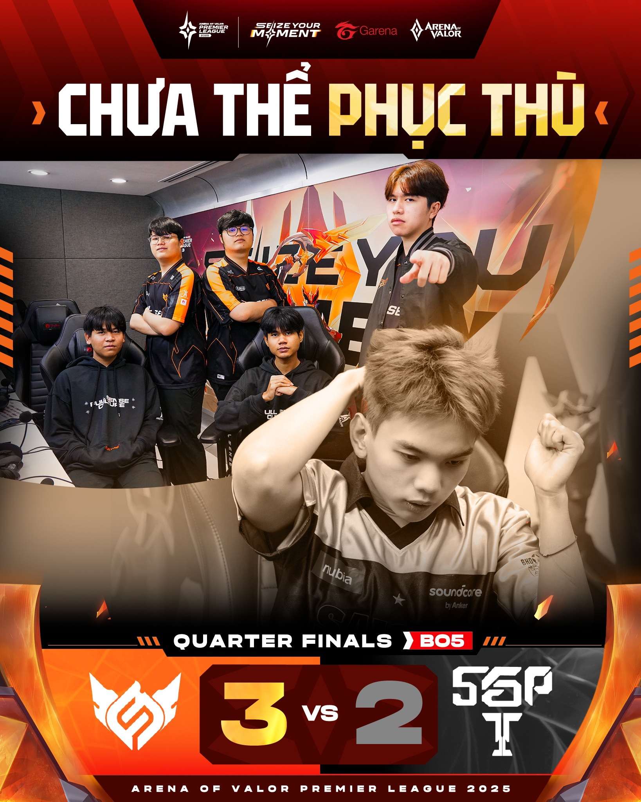
They had only one final chance to stay in the APL and avoid an early return home alongside their fellow AOG representative, FPT - by defeating the team that had lost in the other quarterfinal match : DCG. This team also advanced from the Wildcard stage, but their performance has been inconsistent, showing moments of strength and weakness alike. Therefore, SGP still had a good chance of overcoming them.
As predicted, DCG's form was lacking, and they were easily defeated by SGP with a 3-1 scoreline. SGP will continue their journey in APL 2025.
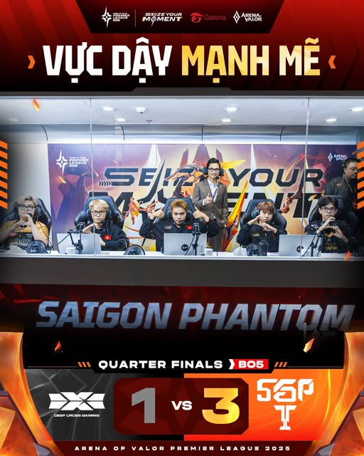
They will face another representative from GCS - ANK, the AOG slayer who has already sent several AOG teams packing. There was still a glimmer of hope, but ANK once again showcased their dominant form, defeating SGP with a 4-1 scoreline. With this loss, SGP exits the tournament and heads home with $20,000 in prize money.
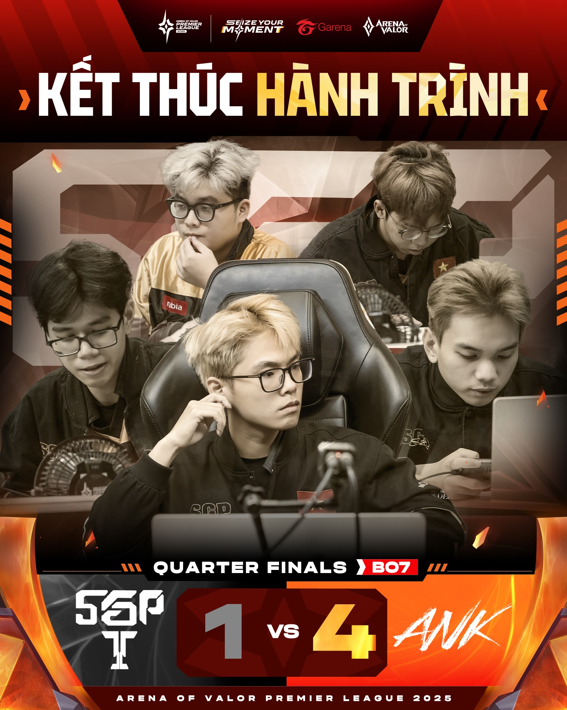
And so, the journey of all AOG teams has come to an end. Once again, the region has fallen behind in terms of competitiveness compared to teams from other regions. We will have to wait for future international tournaments to prove the strength and resilience of AOG.
Semifinal
After the quarterfinals, the remaining teams moving forward were BRU, FW, EA, and ANK. FW will face BRU in the upper bracket, while the lower bracket will feature a do-or-die battle between ANK and EA.
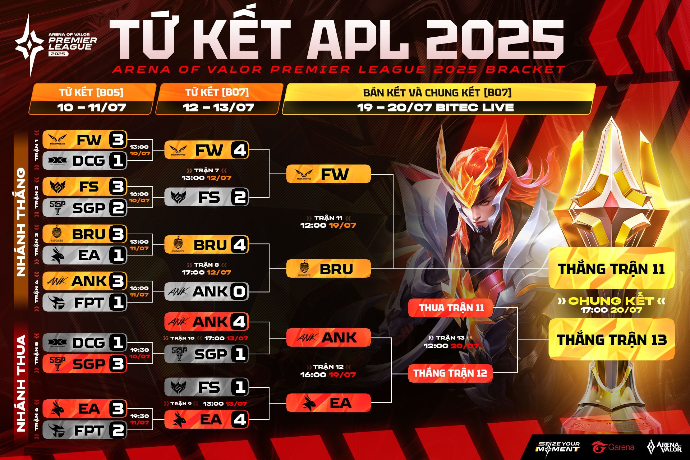
Here, FW continued to showcase their absolute dominance by defeating BRU with a 4-2 scoreline to advance straight to the grand final.
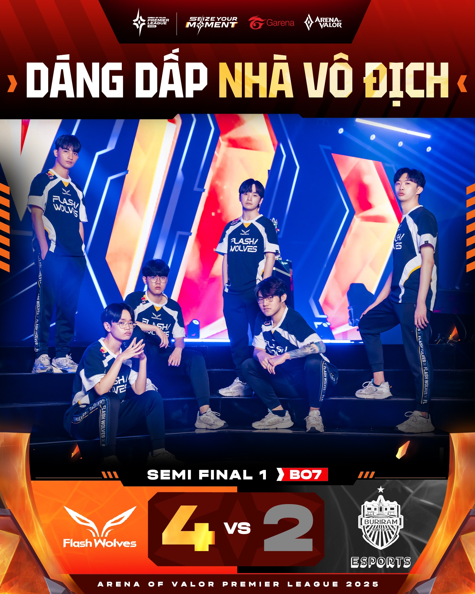
In the lower bracket, ANK was eliminated after a 2-4 loss to EA, bringing an end to their miraculous journey from a wildcard team to the 4th best team in the world. EA once again proved themselves to be the craftier veteran in BO7 series and will face BRU in the next match.
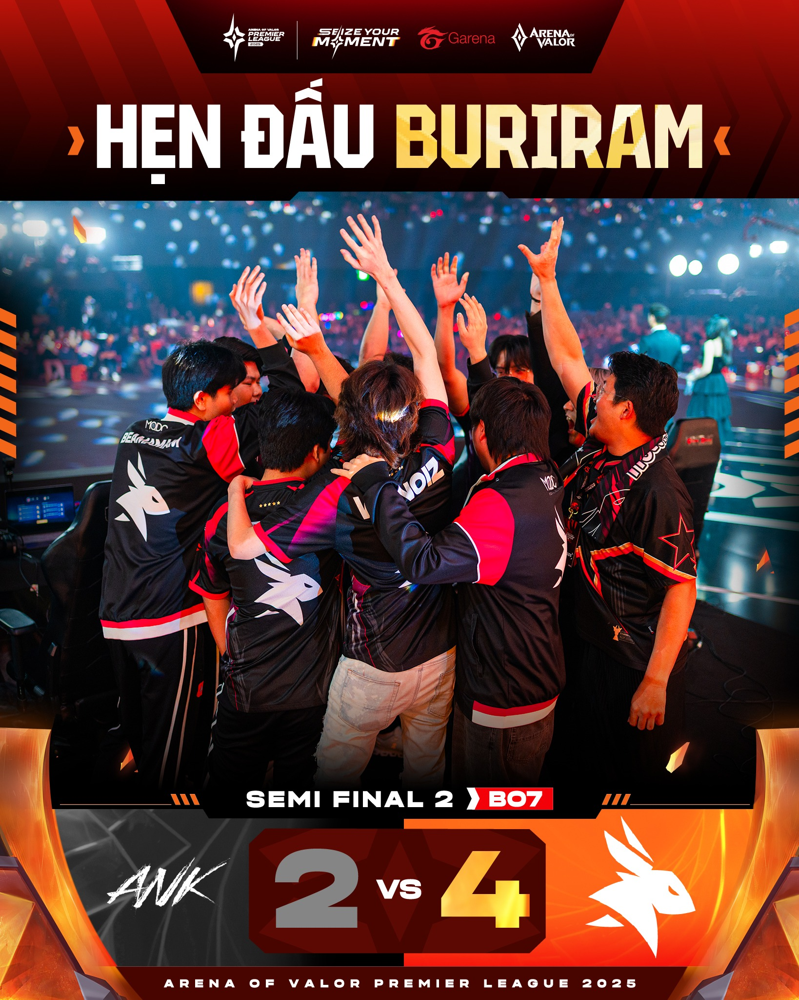
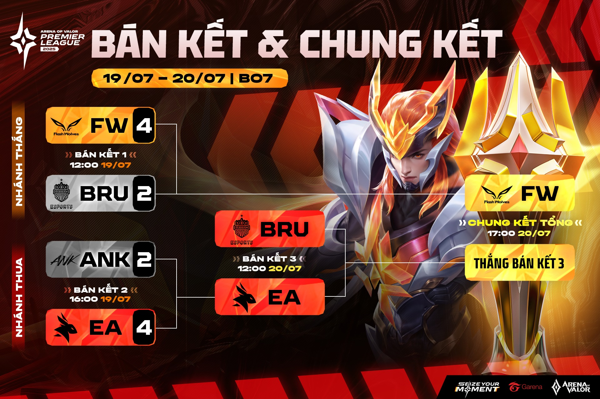
In the matchup against BRU - two teams that know each other all too well from their domestic league - EA once again demonstrated their superior experience, defeating BRU 4-1 to advance to the grand finals against FW.
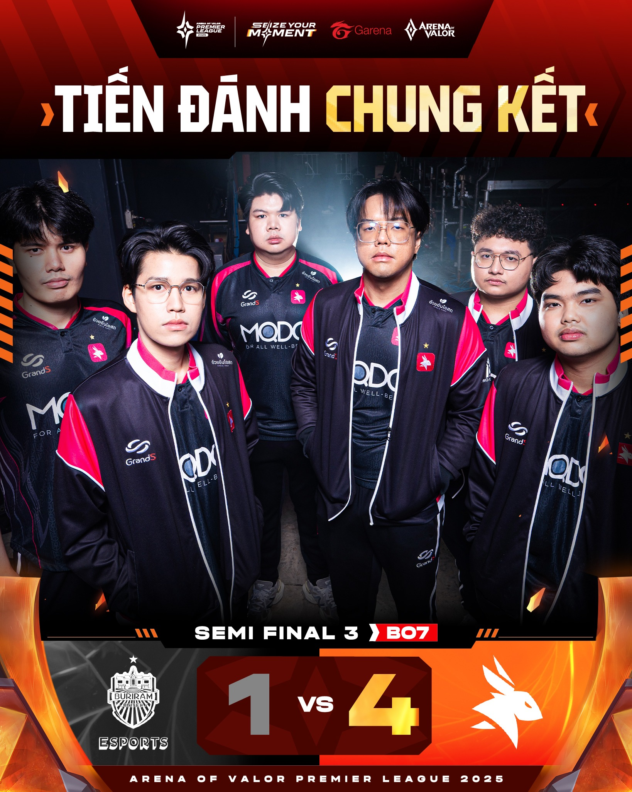
Grand final
After a long journey, the two teams making it to the grand finals were FW and EA - current reigning champions of the GCS and RPL regions respectively. Playing on home turf with overwhelming support from the crowd, EA surged ahead with a 2-0 lead. However, overcommitting to strong picks early on left them exhausted in the BO7 series, and their draft decisions in the following games proved to be fatal. EA lost the next four consecutive games and could only watch as FW lifted the trophy right in front of their home crowd.
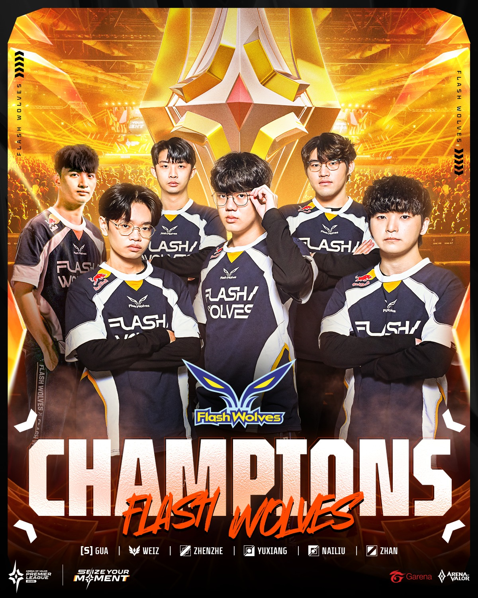
Title
By defeating all the top contenders from around the world, Flash Wolves naturally claimed the championship title of APL 2025 - along with a prize of $200,000 (still rather modest for a team of their caliber).
In addition, with an absolutely convincing performance, FW Nailiu was crowned the FMVP of the tournament, earning himself a $7,000 prize.
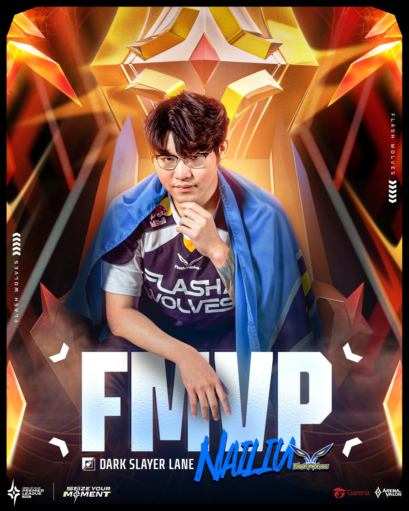
With such a dominant performance, all five members of FW were named in the tournament's best lineup
- Jungler : FW Zhan - MVP Point 7.54
- Midlane : FW Zhenzhe - MVP Point 7.67
- Dark Slayer Lane : FW Nailiu - MVP Point 8.30
- Abyssal Dragon Lane : FW YuXiang - MVP Point 7.80
- Support : FW Weiz - MVP Point 7.45
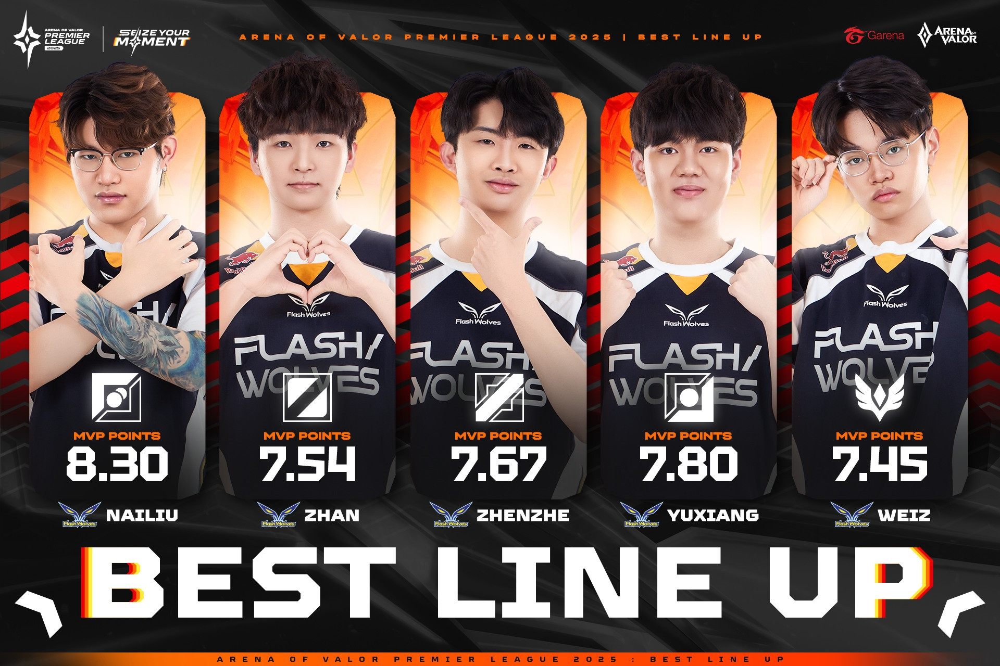
And just like that, another international season has come to an end. Nahida will see you all again in future tournaments! But for now, I need to go comfort Dun - he's pretty upset that his favorite team, FPT, had such an early exit :((